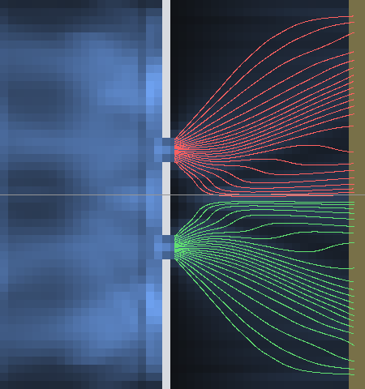
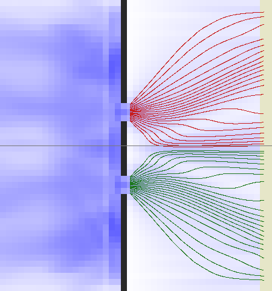

Nature has run the two slits in six ways the repository has not: one quantum at a time, with a which-way marker that absorbs nothing and an eraser behind it, as weak-measurement trajectories, with the choice delayed past the entry, as two slits in time, and with large molecules. Each is derived here from the law as written, under the click's read of the board, by the algebra alone: the law's real line from the mode file's lay and the engine's own integer board and its functions, nothing added to either; every number is the output of a script in the folder, reproduced by the reader on a copy. The verdict of each is one word: WORKS, the statistics nature reads follow from the law as written; WORKS WITH ONE ACT, they follow once one act the engine lacks is declared, named as a hypothesis under its own name; OUT OF REACH, the machine's scale does not reach it. The law is cited by its paragraphs' names, as docs/ALGEBRA.md carries them; what each verdict opens stands by name in docs/FURTHER_RESEARCH.md.
The six verdicts
A. One quantum at a time
Nature's experiment. Taylor 1909 exposed a photographic plate to feeble light for three months and found the diffraction pattern; Tonomura, Endo, Matsuda, Kawasaki and Ezawa 1989 sent electrons one at a time through a biprism, about ten per second and no two in flight at once, and watched the fringes build dot by dot; Bach, Pope, Liou and Batelaan 2013 did it with a true double slit, one electron at a time, a mask over either slit as the control. Each quantum gives one dot somewhere, never a smear; the dots' histogram is the fringe pattern.
The law's statement. The count is the record's share over its unit, read by the credit (The count on the board); at a window's close the regions' credit is N = (the sum of the floored window inflows + W_rec div 2) div W_rec, one division act, at most the record's count (The click writes on the lattice (3): the wall decides how many, the draw who and where); each quantum is drawn to a region by the shares and to one boundary Node of it by the per-Node inflow, the pick the residue of the board's digits read at the close (The click's read of the board), with the totals' bias g / T booked on the click's line (The digits' base and a total's factors); a uniform residue gives Born exactly, the uniformity measured and not derived (the law's honest clause); one quantum over a packet's Nodes stands above the integer floor only at a quantum action large enough (item 49 of what is open).
The algebraic simulation.
Verdict: WORKS. One click per quantum, Born's form as the credit's and the pattern as the clicks' histogram follow from the law as written and the numbers agree with nature's form. The two conditions are declarations of the world file and no act: every exit of the record a declared detector (nature's wall absorbs; the law's face reflects and a receding face credits nothing), and a quantum action above the integer floor for one quantum over the packet's Nodes.
The findings by name. In the shipped geometry at the shipped T one quantum gives no click, by the integer floor (the law's own bound, item 49); the reads of successive intervals of one world are not independent trials, the law's claim being per read, the digits of that interval alone, and that claim is what the 3,240 reads test; the script's close check reads the screen's 96 Nodes against the credit's weights over thirteen regions and names its 0 of 40 as its own, the read again being the check.
B. The non-absorbing which-way marker and the quantum eraser
Nature's experiment. Duerr, Nonn and Rempe 1998 marked an atom's path through a Bragg beam splitter by its internal state, a microwave flip in one arm with no momentum kick, and the fringes vanished with the marking and returned without it; Englert 1996: a marker of overlap V gives the visibility V and the distinguishability D with V^2 + D^2 at most 1; Walborn, Terra Cunha, Padua and Monken 2002 marked the path by polarisation at the slits and erased it on the partner photon, the fringes returning in coincidence; Kim, Yu, Kulik, Shih and Scully 2000 erased it after the signal photon's detection, fringes and anti-fringes in the two coincidence sets and none in the marginal.
The law's statement. A record of several parts is read at its sides by the one form, the joint share J over the window (The one form); a side's weights are the quadratic form of its ports' coefficients on its own second moments with the Gram of the sides after it, the all-ones Gram for the last side, which reads coherently (The meeting's identity, the Gram theorem); the sides draw in the order of their closes, each a whole quantum by the shares, the write at the birth the realised port's coefficients on the parts, a scaling writing nothing (The meeting's reading); the parts are never summed at a Node (The pair family and Bell's gate). The marker: a two-part record crosses the wall, on the lower gap's Links the parts rotated by the half-angle pair (c, s) and on the upper gap's by (c, -s), so that behind the wall the part H carries c (psi_L + psi_U) and the part V carries s (psi_L - psi_U); the screen reads F[L] + F[U] + 2 (c^2 - s^2) F[L, U], F the conserved form's current, the cross term's weight cos theta = (c^2 - s^2) / (c^2 + s^2).
The algebraic simulation.
The two-gap row of the one line (N 279.59) against the two paths' sum with the cross current (N 279.56), within 0.25 per region. Englert exact at the pair (2, 1): the marker's states (2, 1) and (2, -1), P(+ | L) = 9 / 10, P(+ | U) = 1 / 10 at the basis (1, 1), D = 4 / 5, V = 3 / 5, V^2 + D^2 = 1. The Gram theorem in exact integers at the central region (the moments M = [[41,332,820,414,803, 31,742,346,985,192], [31,742,346,985,192, 44,735,999,144,663]], the engine's gram_of and side_weights): the last side at (1, 1) reads w(+), w(-) = 149,553,513,529,850 and 22,584,125,589,082 = M11 + M22 +/- 2 M12 exactly; a side with the identity-pattern side after it reads 86,068,819,559,466 at either port, M11 + M22, no cross term. The rows are the rationals' (the real line from the mode file's lay, the exact rationals); in the engine's integers a rotation by (c, s) multiplies the parts' share by c^2 + s^2 at each crossing, so the act's line carries the books' scale as the write at the birth carries it (The count on the board) or the levels' division.
Verdict: WORKS WITH ONE ACT. The duality and the marginal are exact, the eraser in the eraser-first order follows by the write at the birth as built, and the marking rotation is the one act the engine lacks.
The findings by name. (i) The law's own sentence, that a side's pattern columns are orthogonal with equal norms as the loader admits them (The meeting's identity), is the marker's basis. (ii) The position-first order (Kim): the engine as built has no where-draw of a record of several parts at a region without a pattern, a record of several parts being drawn at its pattern sides alone (lists.region, lists.readings), and the law's write at a click is the realised port's coefficients on the parts, a scaling writing nothing (The meeting's reading), while the one form's J is symmetric in the sides' order; so the position-first order is out of the engine's reach as built, a finding by name against the write clause's reach, the line for it (the write of the parts' amplitudes at the realised Node as the realised term's direction) the law's form and a later round's. No shipped world shows the case.
The act the engine lacks, a hypothesis under its own name. The marking rotation: a declared region whose Links rotate the record's parts among themselves by a declared integer pair (c, s) as the quantum crosses, no quantum taken, no count moved, the parts' lines leaving the region as the rotation of their entry; the colour holder's form on declared Links (the paragraph on the three answers under The click writes on the lattice), an act from outside the Node as the lay and the face are, nothing at the Node.
C. The weak-measurement average trajectories
Nature's experiment. Kocsis, Braverman, Ravets, Stevens, Mirin, Shalm and Steinberg 2011 measured the average momentum of single photons weakly at many planes behind a double slit and reconstructed average trajectories: smooth lines fanning out from each slit, never crossing the midline, bunching toward the fringes' maxima and avoiding the minima, the streamlines of the probability current.
The law's statement. No weak measurement accumulates in the law: a click writes what it reads, the record is re-laid from its birth, and every click is the first click of a new history (The board is deterministic, but it cannot be read through clicks, because of the uncertainty principle (3)); a reading finer than a region and a window is a lattice reading and no measurement (No click names a Node). What stands on the board is the conserved form's own current per Link, F_ij = num (now_i before_j - before_i now_j), row 5 of the conventions, and its share, row 14; the streamlines of that current are a lattice reading.
The algebraic simulation.


The two pictures: the streamlines on the law's real line (left) and on the engine's integer board (right), forty-four lines seeded at the two gaps, the screen at the right edge; the scripts and the numbers in papers/one_rule/variants/README.md.
Verdict: WORKS, as a reading. The streamlines of the law's own current have nature's form, non-crossing and bunched toward the maxima (the regions 2, 5, 6, 9, sparse at 4 and 7), on the real line and on the integer board alike; they are a lattice reading and no click, and the law states no click formula for them, since no weak measurement accumulates.
The findings by name. What nature's weak values read beyond the streamlines, the sign of the momentum's imaginary part in the near field, is not a formula of the law and is not claimed. The blind, were a world built: none in clicks; the lattice reading above, the arrival rows within 0.1 Node of the real line's.
D. The delayed choice
Nature's experiment. Wheeler 1978 posed it; Jacques, Wu, Grosshans, Treussart, Grangier, Aspect and Roch 2007 ran it: single photons from an NV centre enter a Mach-Zehnder interferometer whose second beam splitter is switched in or out after the photon has passed the first, by a random choice in the photon's flight; with the splitter in, the two exits show fringes against the arms' phase (visibility 0.94); with it out, each exit counts one half with no fringe; the choice after the entry changes nothing of either statistic.
The law's statement. The Mach-Zehnder row (l) of the rows against nature: a splitter is a body of a count one Node deep at the content U Gamma, its reflected share s = cos^2 k at the content 1 - 2 U = sqrt 2 sin(k / 2), one half at U = 0.2294 (1,376 of Gamma = 6,000) under the linear Link pace and at U = 0.3070 under the composed paces; Rule3 being linear at fixed paces the two arms add with their phases at the second splitter, the cross exit's share 4 s (1 - s) cos^2(Delta / 2) and the straight exit's one minus it; one quantum at two detectors is one click by the credit's draw. Nothing on the board depends on what stands beyond one Link per interval (The interval's dependency radius is one Link); a side after the exit side leaves its marginal (The meeting's identity); the write at the birth is the only writing to the past, the realised orbit alone (The click is the meeting of the future with the past).
The algebraic simulation.
Verdict: WORKS WITH ONE ACT. The algebra of the choice follows as written: the statistics depend on the configuration the record meets, and the write at the birth is the only writing to the past, the realised orbit alone.
The findings by name. The exit side's marginal is unmoved by any side after it, the Gram's corollary; nothing is retro-written but the realised orbit. The blind of a world: one click per world; with the splitter in at equal arms every click at the cross exit, the exits swapping every 4 Links of arm difference; with it out, each exit 1 / 2 whatever the arms; the choice's interval anywhere after the record has left the first splitter's Node and before it reaches the second's, the two statistics unchanged by it.
The act the engine lacks, a hypothesis under its own name. The timed declaration: a face or a body with a declared interval of entry, the second splitter's content slab entering after the record has passed the first splitter and before it reaches the second's place. The engine's declarations are static but for the receding face's schedule, the source in time at a body's Node and a whole packet laid at a declared interval (ENGINE.md section 4, loader/packets.py); no face, body or content slab takes an interval of entry. A declaration with an interval, as the receding face's schedule and the whole packet's interval key are, the loop's act from outside the Node, nothing at the Node.
E. The time slits
Nature's experiment. Tirole, Vezzoli, Galiffi, Robson, Maiolino, Zayats, Sapienza and Pendry 2023 opened a time-varying mirror twice, two slits in time separated by a delay, on a continuous beam; the reflected light's spectrum showed interference fringes in frequency, their spacing inversely proportional to the slits' separation, under the envelope of a single slit's spectrum, the temporal counterpart of Young's fringes.
The law's statement. Two laid packets of one record separated along one axis by d Links are the same event laid twice in time, the second reaching every Node d / v_g intervals after the first (the band's line, row 3 of The conventions and the units: cos omega = (2 + cos k) / 3 for light along an axis, the group pace (num / (3 den)) sin k / sin omega); Rule3 being linear at fixed paces, every mode carries the factor 1 + e^(-i k d), so the record's spectrum is the single packet's times 4 cos^2(k(omega) d / 2); a body reads the beam by its two quadratures over its window (The click writes on the lattice (5)); the toy integers carry one bit per line per interval against draws of 54 bits (What a body reads).
The algebraic simulation.
Verdict: WORKS. The time slits' fringes follow from the band's line and the law's reader of frequency with nature's form; two identical slits give the symmetric envelope, unequal packets would give the asymmetric one by the same algebra, not simulated.
The findings by name. The chain is stepped in real arithmetic and not on the integer board; the sinc^2 of a window is the derivation's own and no line of the law (the law's detuned share Omega_R^2 / (Omega_R^2 + Delta^2 / 4) stands in The click writes on the lattice (5) with the words not in the engine). A world that would show it: a chain of about 1,200 Nodes with the two packets laid at the start and a row of instrument bodies downstream at resonances across the band, each reading the beam by its two quadratures, the blind the bodies' turns proportional to the single packet's spectrum times 4 cos^2(k(omega_d) d / 2).
The act the engine lacks, a hypothesis under its own name. The shutter, a face or mirror that stands for the slits' durations alone, the same timed declaration as the delayed choice's; and the spectrometer that draws, the instrument bodies' reads at the toy integers carrying one bit per line per interval against the draws' 54.
F. Large molecules
Nature's experiment. Arndt, Nairz, Vos-Andreae, Keller, van der Zouw and Zeilinger 1999 interfered fullerenes; Fein, Geyer, Zwick, Kialka, Pedalino, Mayor, Gerlich and Arndt 2019 interfered molecules of 25,000 atomic mass units, about 2,000 atoms, in a Talbot-Lau interferometer, the de Broglie wavelength 53 femtometres against gratings of 266 nanometres; Hackermueller, Hornberger, Brezger, Zeilinger and Arndt 2004 heated fullerenes until their thermal photons carried the path away and the fringes faded at the rate the emission rate and the photons' wavelength give.
The law's statement. A molecule in the law is a cluster of bound bodies, every atom a bound body of the holder of the sign (The atom is a bound body of the holder of the sign), the cluster a body of the next level up with its own Gamma and interval (The hierarchy is recursive, The algebra of clusters); what the grating reads is the cluster's one record over every path at once, the count one per molecule, one click per molecule at the screen's region by the shares, Born as the credit's: the same algebra as A with the molecule's wavelength the record's. Different is the marker: a cluster's parts exchange quanta and are each other's detectors, and the cluster's own emission clicks carry the path away.
The algebraic simulation.
Nothing computed: the molecule's record as one body of the next level is derived nowhere in the engine, and the scale stands beyond it, the Link at 2.5 x 10^-22 m (The nuclear holder) against a wavelength of 53 femtometres and gratings of 266 nanometres.
Verdict: OUT OF REACH. The algebra is the one record's click algebra and the cluster's own emission clicks as the marker; nothing of it is computable on the engine.
The findings by name. The blind by the hierarchy, were it ever run: one click per molecule, the Talbot-Lau fringes the cluster record's shares with the visibility falling as the overlap of the emitted photons' path states, 1 at wavelengths above the slits' separation and toward 0 below it, at the cluster's own emission rate.
The two acts named, the marking rotation and the timed declaration, are declarations from outside the Node as the lay and the face are, nothing at the Node; they stand in the law as hypotheses under their own names and in the engine's open list. The derivation's scripts, their outputs and the forty one-quantum worlds: papers/one_rule/variants/, beside the paper's script two_slits_real_line.py.